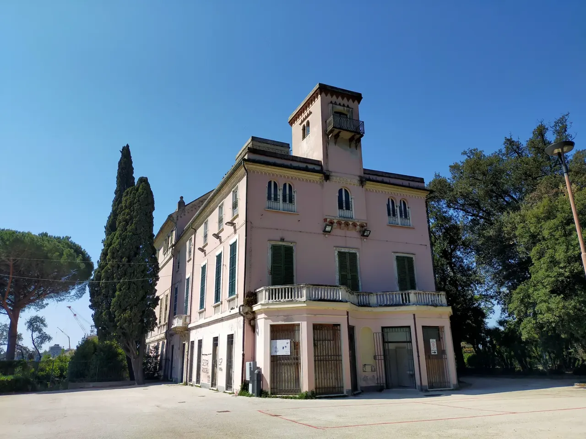

Sestri Ponente
Villa Rossi Martini

Una villa di origine seicentesca circondata da un parco storico all’inglese.
Una curiosità
Il disegno del parco è del paesaggista Giuseppe Rovelli.
ESPLORA GENOVA
Il Ponente delle ville e dei giardini, accanto alla storia industriale.
Sestri Ponente e Cornigliano.
Comune · Municipi e quartieri ↗
Sestri Ponente

Una villa di origine seicentesca circondata da un parco storico all’inglese.
Il disegno del parco è del paesaggista Giuseppe Rovelli.
Cornigliano
Una delle ville che ricordano la storia residenziale di Cornigliano.
È sede della biblioteca pubblica Guerrazzi.
I riferimenti descrivono il percorso urbano. Non sono indicazioni su sensi di marcia, cantieri o accessibilità.
Un collegamento importante nella viabilità del Medio Ponente. I riferimenti indicano il collegamento descritto dalla fonte, non un itinerario di guida.
Autorità portuale · Cavalcavia Siffredi ↗ · Controllo: 17 ottobre 2026.
Questa è una prima selezione: altre strade e altri luoghi saranno aggiunti dopo la verifica delle fonti.
Scegli un altro municipio →